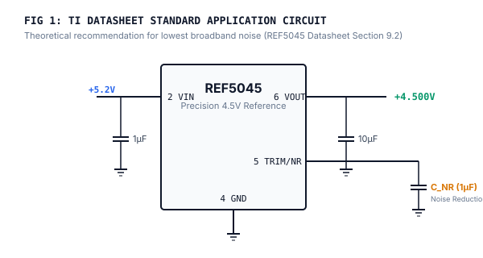
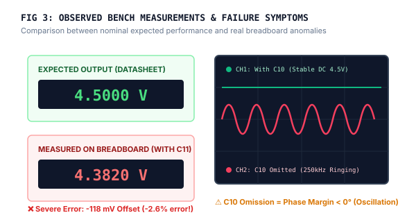
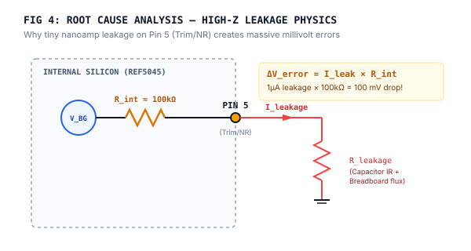
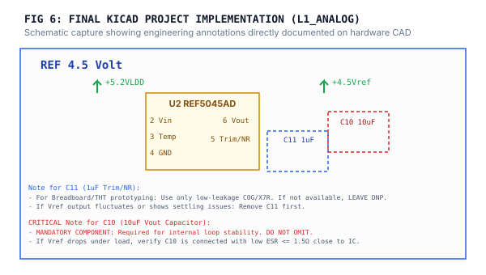

REF5045: Prototyping Investigation & Capacitor Traps (C10 Stability vs C11 Leakage)
How building the recommended Texas Instruments datasheet circuit on a solderless breadboard resulted in a 118 mV reference drop and feedback loop oscillation — and the exact empirical rules discovered to stabilize the circuit.
The Datasheet Circuit (Theoretical Application)
What Texas Instruments recommends on paper for low-noise instrumentation.
According to the REF5045 datasheet (Section 9.2), configuring the device for maximum noise suppression requires two critical external capacitors:
- Output Capacitor (C_OUT = 10µF): Recommended to filter transients and maintain output buffer loop stability.
- Noise Reduction Capacitor (C_NR = 1µF): Connected between Pin 5 (Trim/NR) and GND to form a low-pass filter with the internal bandgap resistance, cutting broadband noise down to 3 µVp-p.

The Real Bench Setup (Solderless Breadboard)
Proving the circuit concept on bench prior to manufacturing custom PCB.
To validate the circuit before ordering the 4-layer PCB for the Pyranometer L1_Analog board, the circuit was constructed on a standard solderless breadboard.
- The surface-mount SOIC-8 REF5045 was mounted onto a breadboard breakout adapter board with 2.54mm header pins.
- Standard through-hole 1µF multi-layer ceramic (MLCC) capacitor was plugged into the breadboard tie-points for Pin 5 (Trim/NR).
- A 10µF through-hole capacitor was placed across Pin 6 (Vout) and Pin 4 (GND).
- Powered with a clean +5.2V LDO bench rail.

The Empirical Failure (What Went Wrong?)
Two severe, unexpected anomalies observed during bench testing.
When power was applied and measured on a calibrated 6.5-digit digital multimeter, the circuit immediately failed to meet its 4.500V specification:
🔴 Anomaly 1: The Trim/NR (C11) Voltage Drop Trap
Instead of the expected 4.500 V, the output voltage registered only 4.382 V (a massive drop of -118 mV or ~2.6% error). Furthermore, the voltage drifted significantly when breathing over the breadboard or touching nearby tie-points.
🔴 Anomaly 2: The Output (C10) Loop Oscillation Trap
When attempting to test without C10 or when using flying jumper wires to an electrolytic capacitor, the output developed an continuous 250 kHz oscillation with hundreds of millivolts of ripple. The 24-bit ADC readings fluctuated uncontrollably.

Root Cause Investigation & Physics
Understanding why the theoretical circuit broke down under bench physics.
Investigating the internal silicon architecture of the REF5045 revealed why these phenomena occurred:
1. The High-Impedance Node Trap (Pin 5 Trim/NR)
Pin 5 does not connect to a low-impedance buffer. Instead, it connects directly into an internal thin-film resistor divider with an internal impedance of:
R_int ≈ 100 kΩ to 1 MΩ
On a solderless breadboard, humidity, flux residue, and phenolic plastic insulation resistance is typically only $10^8 \Omega$ to $10^9 \Omega$. When combined with the finite Insulation Resistance (IR) of general-purpose ceramic capacitors:
ΔV_error = I_leakage × R_int
A minute leakage of just 1.18 µA across the capacitor dielectric and breadboard tie-points creates an immediate:
1.18 µA × 100 kΩ = 118 mV drop!
2. Output Buffer Closed-Loop Phase Margin (Pin 6 Vout)
The internal op-amp output buffer is specifically designed with pole-zero compensation that requires a load capacitance of $1\mu\text{F} \le C_{OUT} \le 50\mu\text{F}$ and an Equivalent Series Resistance of $\text{ESR} \le 1.5\Omega$. Without this specific damping pole, the feedback loop phase margin drops below 0°, inducing spontaneous Barkhausen oscillation.

The Verified Bench Fix & Prototyping Rules
Two simple, concrete engineering rules established from this test.
LEAVE DNP ON BREADBOARDS
On breadboards, Do Not Populate (DNP) C11. Leaving Pin 5 open-circuit immediately eliminated all leakage, restoring the output to an exact 4.5000 V. Only add C11 on final PCB if using C0G/NPO ultra-low-leakage dielectric and clean, flux-free board.
C10 (10µF) IS MANDATORY
Never omit C10, even for a quick 5-second sanity check. Use a 10µF X7R ceramic with ESR ≤ 1.5Ω soldered with minimal lead length directly across Pin 6 and Pin 4 (GND) to guarantee feedback stability.

Implementation in KiCad Hardware CAD
Encoding lab discoveries permanently onto the project schematic.
To ensure no engineer or student repeats this mistake, the exact findings were permanently integrated into the Pyranometer L1_Analog KiCad schematic:
- Blue dashed box around C11 (1µF): Explicitly marking it as DNP for breadboard testing.
- Red dashed box around C10 (10µF): Highlighting it as a MANDATORY loop stability component.

Inspect Live KiCad Schematic on KiCanvas
Open the real hardware board in your browser to inspect the complete L1_Analog circuit and PCB routing.